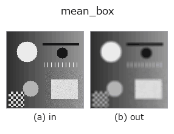

smoothing op• 数据种类:image → image
• 调用:fullseye.apply(img, "mean_box", a=0.5, b=0.5)(2-D 的模型是一张图 + 两个标量旋钮 a,b∈[0,1])
• HALCON 对应:mean_image(其含义与参数可参考 HALCON 手册)

*图为在 128×128 合成输入上实际运行的输出。左为输入，右为输出。点云以俯视散点显示(亮度 = z)，一维序列为折线，体数据为沿 z 的最大值投影，视频为中间帧，复数图像为幅值；无法成像的返回值直接显示数值。*
扫描旋钮 a(0.1 / 0.5 / 0.9，另一旋钮取默认):
▸ mean_box: 旋钮 a 扫描 (文档网站)
扫描旋钮 b(0.1 / 0.5 / 0.9，另一旋钮取默认):
▸ mean_box: 旋钮 b 扫描 (文档网站)
换别的图像(合成场景 / 照片 / 硬币。上排为输入，下排为对应输出。旋钮取默认):
▸ mean_box: 其他输入图像 (文档网站)
*未展示彩色 (H,W,3) 输入: 此算子把颜色通道当作第三个空间轴(跨通道)。请按通道分别调用。*
矩形窗口的简单平均（box）滤波器。相当于 HALCON 的 mean_image（Smooth by averaging.）。
a 将窗口边长在 3,5,7,9 这 4 档（_k(a)，把 a 分成 4 段后取整）间切换。b 选择边界处理：b <= 0.5 为 reflect(复制边界像素并镜像折返。是 scipy 的默认，也是 2026-09-17 之前的行为)，其后依次为 nearest / constant(用 0 填充)/ wrap(从对侧卷绕)。★窗口为 3 时 reflect 与 nearest 在原理上一致(越界只有 1 像素，所以复制来源相同)—— 改了边界处理结果却不变时，先怀疑窗口大小(窗口为 9 时 3 种结果都不同)。计算比高斯轻，但容易出现振铃，边缘会变模糊。
边界处理：重复边界像素并镜像折返 (d c b a | a b c d，scipy 的默认 reflect)(2026-09-16 实测并记录)。
• gallery2d_smoothing_rank 族使用指南
• 示例数据目录(下载 URL / 许可证) —— 2-D 用 skimage.data(BSD/公有领域)加合成图,3-D 给出真实数据源(Stanford/PDS 等)的下载 URL。
• 算子来历与参考文献 —— 该算子族所依据的研究/方法出处。
• 算法的正典(作者、年份)与用途见上面的族使用指南。
下面的程序已确认可以运行(与图相同的输入)。在 Studio 帮助中，此块会变成按钮，可当场加载并运行。
mean_box 0.35 0.50
• gallery2d_smoothing_rank — py -3.11 examples/gallery2d_smoothing_rank.py
image 作为输入)identity · gaussian · bilateral · unsharp · median · min_filter · max_filter · percentile
smoothing)gaussian · bilateral · unsharp · sk_tv · sk_wavelet · sk_rolling_ball · sk_nlm · sk_tv_bregman
*Provenance: ops.py — 2D 算子登记表。本条目由 tools/opdocs.py md 自动生成(请勿手工编辑)。*
© 2026 Kazufumi Furuse — Fullseye operator documentation. Licensed under Apache-2.0.